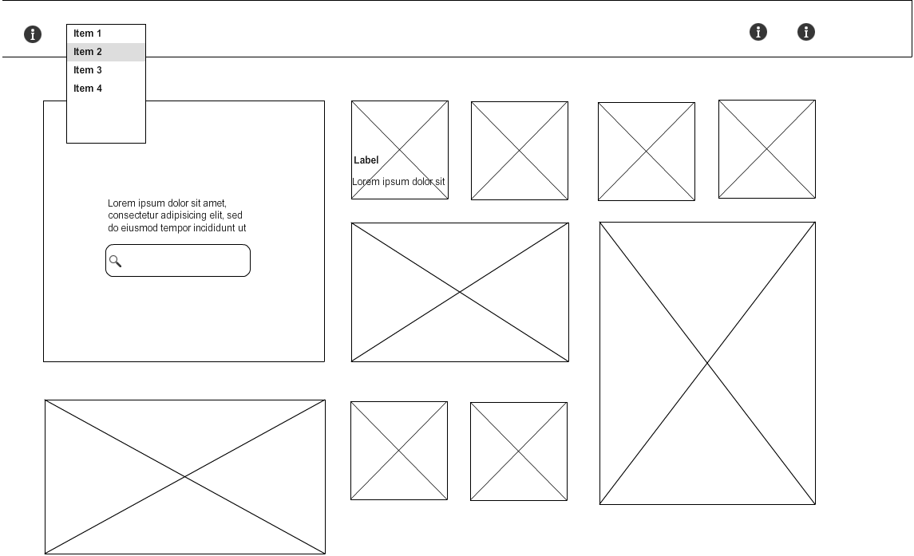
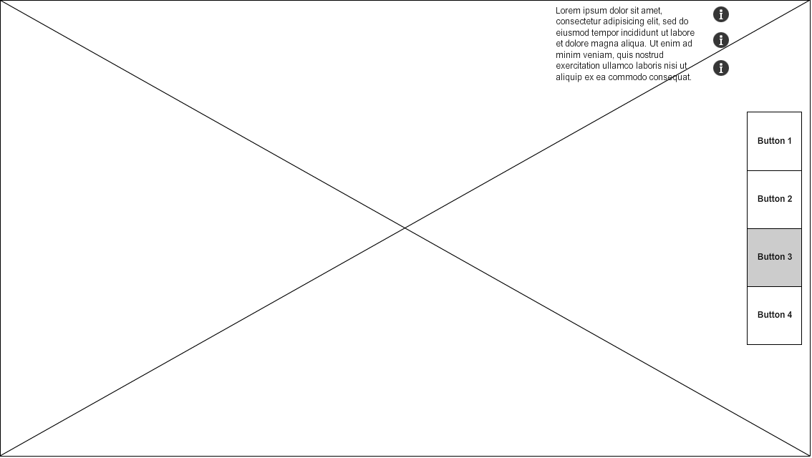

Square
This website is trying to solve the problem "how to entice users to buy stuff" It is very simple because it is easy to peruse and scroll infinitely through the images. All the products are images. There is very minimal text other than the bare essentials that a user needs to know. The text is only available on hover which keeps the page free of text. This works very well because it makes all of the products stand alone and the good ones stand out just based on the image.
Yelp

This website is trying to solve the problem "how to display the information the user requested" Yelp provides important information for easy comparison: the ratings. The visual challenges are how to make it easy for the user to see the important information. They do this by using color for the ratings.
Too Young to Wed
this website is trying to solve the problem "how to engage a user's interest so they care about the cause" This is a difficulte problem to solve for non-profits. The visual challenges are how to convey the issue and compel the reader to engage in the cause. This particular website does this through minimal text and a lot of photos.